Open tools. Shared knowledge. Better decisions.
OpenEarth
Open-source tools for FAIR data, models and services in earth science and engineering.
OpenEarth uses open source tools for kickstarting your tailor-made FAIR data management solution. This will help you in enabling discovery, storing, sharing and providing information of valuable data, such as observations, geographic data, and model results
Data is essential
The most valuable part of every data intensive project is data. Data gathering often requires a substantial part of the budget of a project. Centralized, discoverable and easy to access to data that can be easily reused in other projects is of vital importance for current and future work.
Data management checklist!
Do you recognize yourself in the following statements?
- Do you use standardized formats?
- Can you download your data online?
- Can you show maps of your data online?
- Can others find your datasets?
- Do you validate your data?
- Do you keep your raw data?
- Is your data processing automated?
- Do you keep track of issues (lineage)?
- Do you have a data model?
OpenEarth greatly improves data management
OpenEarth consists of Open Source tools to transform and store your data in a standardized format. This enables you to easily:
- Show the data in online viewers
- Help others find your data in online catalogues
- Share the data through an online download
- Store the changes in the data (version control)
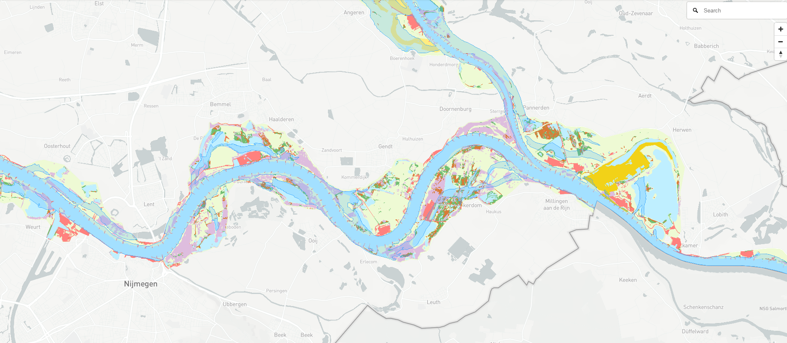
OpenEarth projects
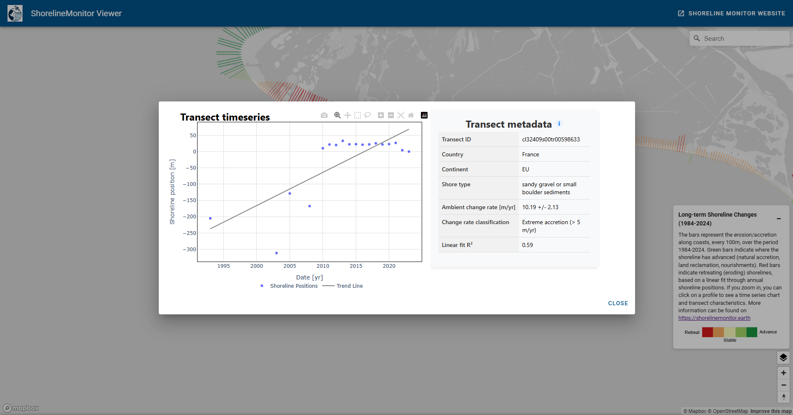
The ShorelineMonitor provides harmonised, satellite-derived information on the dynamics of the world’s sandy, muddy and deltaic shorelines. Built on consistent global methods and transparent quality assessments, the dataset supports scientific research, coastal monitoring, and policy-relevant assessments. The dataset on global coastal erosion enables both discovery and decision-making. Thats the reason that we share the data publicly and offer a collaborative environment to jointly better understand the dynamics of our Planet’s coast.
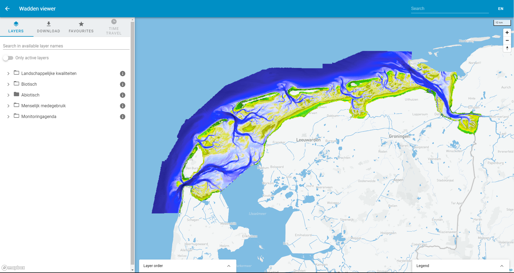
Basismonitoring Wadden webportal is a fully FAIR dataportal with Findable,Accessible, Interoparable and Reusable data targeted towards improving reuse of data in Dutch Wadden Sea area.
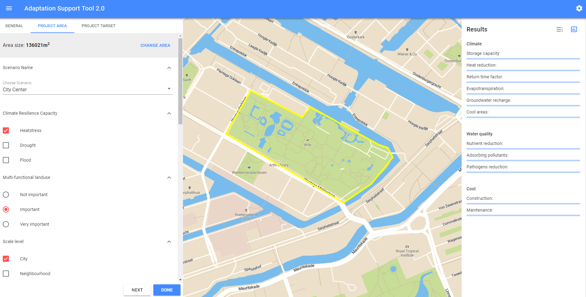
The Klimaatbestendige Stad [formally known as AST] was developed by Deltares and can be used to explore measures that increase the climate resilience of an area.
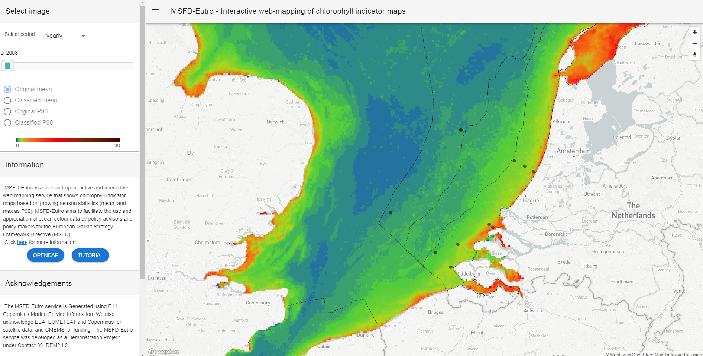
MSFD-Eutro is a free and open, active and interactive web-mapping service that shows chlorophyll indicator maps based on growing-season statistics (mean, and max as P90). MSFD-Eutro aims to facilitate the use and appreciation of ocean colour data by policy advisors and policy makers for the European Marine Strategy Framework Directive (MSFD)
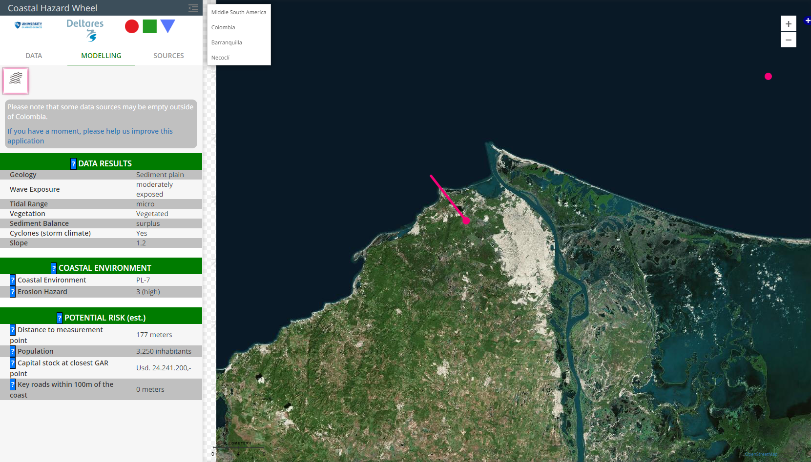
The Coastal Hazard Wheel App can be used for classifying coastal locations worldwide and producing hazard maps for the hazards of ecosystem disruption, gradual inundation, salt water intrusion, erosion and flooding under the projected climate change. It is an automated version of the Coastal Hazard Wheel based on global datasets.
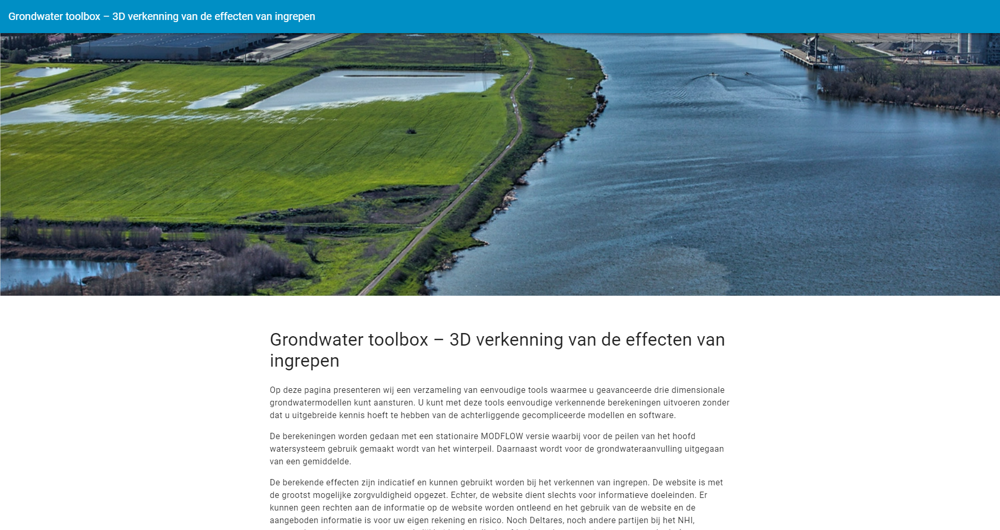
The LHM Groundwater toolbox is a Proof Of Concept setup for Rijkswaterstaat. It enables users to carry out a measure and perform a calculation with a stationary model (iMODFLOW) of the LHM (Dutch Hydrological Model). A password is required because it is still in concept phase.
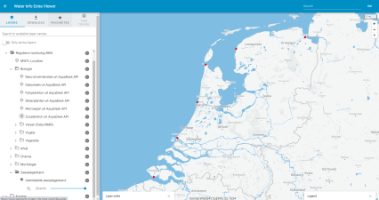
Water Info Extra (WIE) is a webportal that hosts projectdata (FAIR) for RWS. It combines data from several sources (simple OGC WMS sources) as well as data from API's.
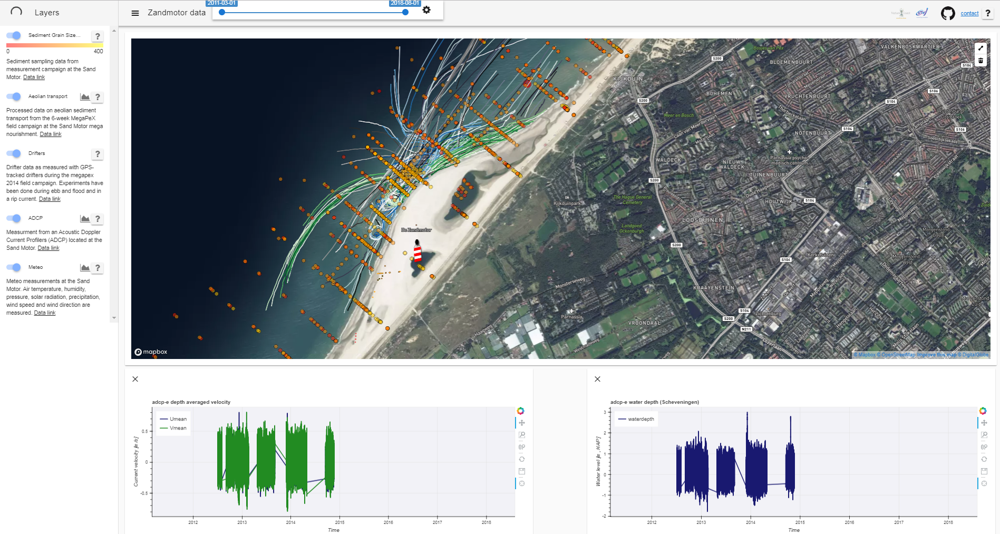
The SandMotorViewer is a web viewer built for TU Delft, following a request from the University of visualizing data collected in and around the SandMotor since its birth in 2011. Data is stored as NetCDF in an OPeNDAP server. Bathymetric data, sediment grainsize distribution, aeolian Transport, drifters path can be visualized via the Web interface, allowing the user to change time span and generate graphs of requested variables.
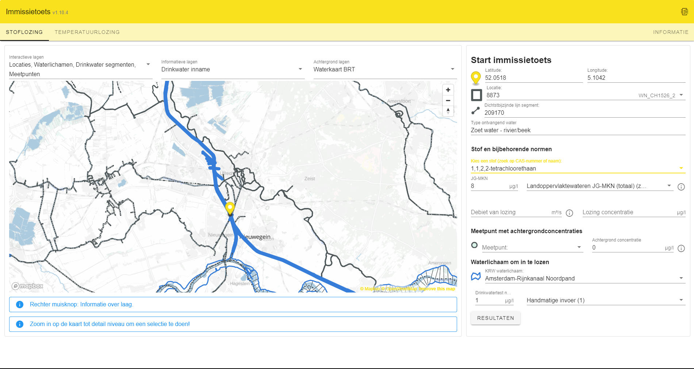
Despite the continuing reduction of emissions from point and diffuse sources, the desired water quality is not (yet) being met at several locations. To achieve an effective further improvement of the quality, a clearer coordination between the water quality objectives and the emission reduction required to achieve them is desirable: the so-called emission-imission approach. The imission test has been developed as a tool for this purpose. The application is set up in accordance with the stepped approach set up in the Immission Test Handbook (October 2019).
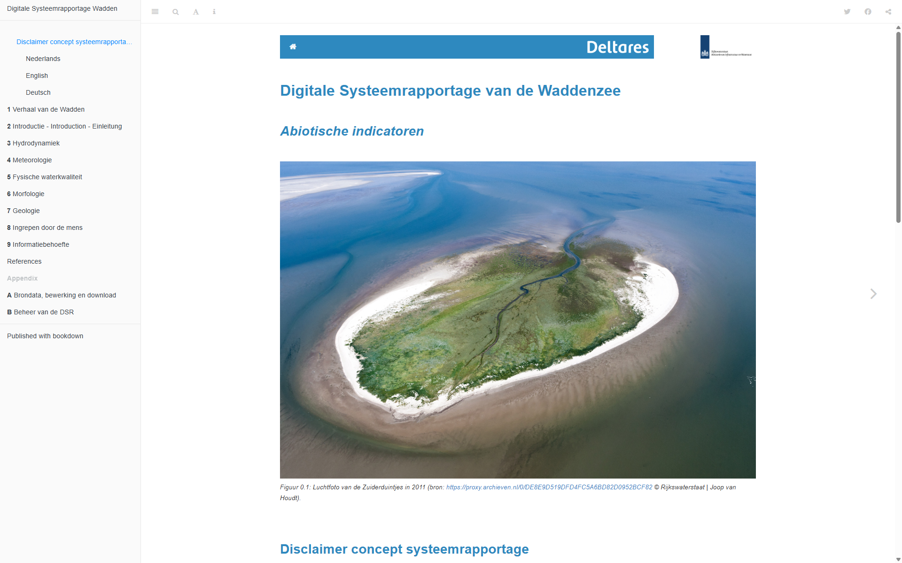
This digital Wadden Sea System Report is designed as a reference work, to meet the initial information needs for managers, users and researchers of the Wadden Sea. It contains indicators that describe the state and trends of the natural abiotic system, and that affect the naturalness of the Wadden system. This makes them relevant for different management and policy goals in the Wadden Sea region.
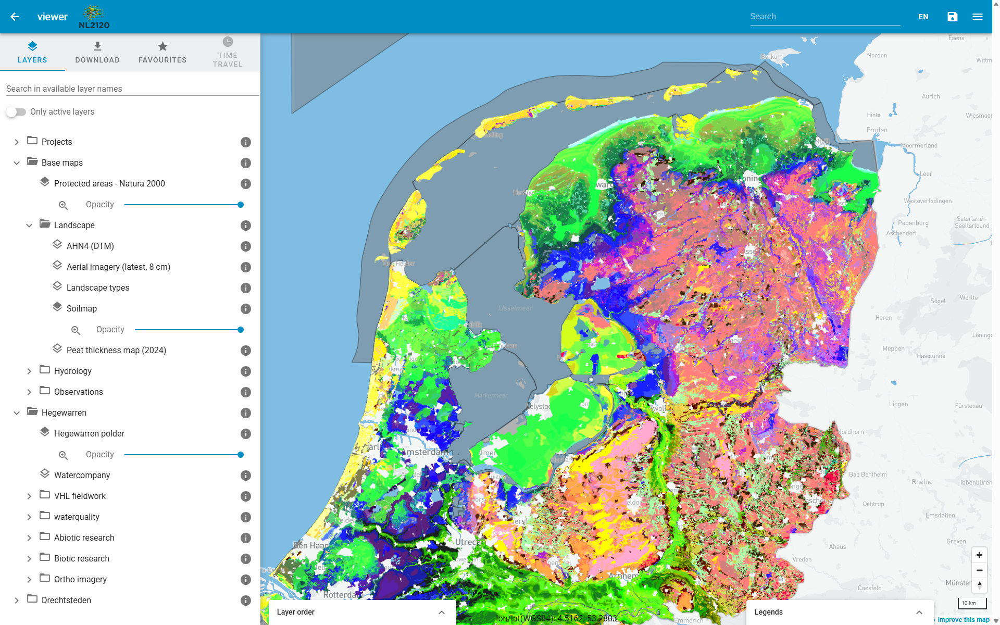
NL2120 is a ten-year programme (starting in 2024) in which science, business, government, nature organisations and education work together to make the Netherlands climate-proof and natural by upscaling Nature-based Solutions. Nature-based solutions are our most important ally in climate change and other major societal challenges. They connect to the natural functioning of water, soil and ecosystems, improve biodiversity and water and soil quality, and sequester nitrogen and CO2. Part of the project is to monitor the effects of the measures taken, and to make this information available to the public. The NL2120 viewer is a web application that provides access to the data collected in the project, and allows users to visualize and explore the data in an interactive way.
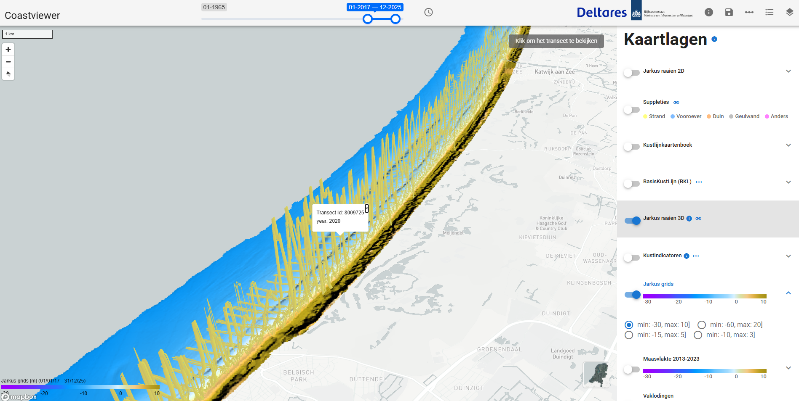
The Coastviewer is a web application developed by Deltares and Rijkswaterstaat to visualize data on the Dutch coast. The Coastviewer provides an immediate overview of how the Dutch coast has evolved in recent years and is continuously updated with the most current data.
OpenEarth open data portals
The Deltares Data Portal is the starting place to find and publish spatial data sets. The portal facilitates the discovery, multiple usage and dissemination of spatial data.
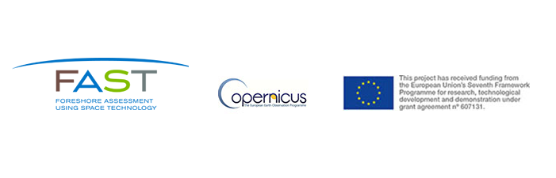
FAST is developing down-stream services for the European Earth Observation Programme Copernicus to support cost-effective, nature-based shoreline protection against flooding and erosion. Open global datasets can be found in the data portal.
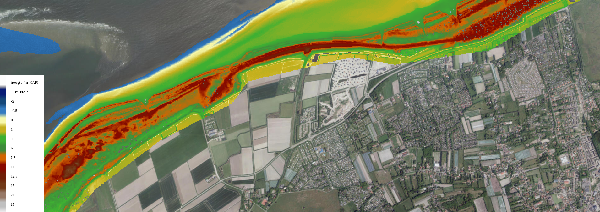
OpenEarth experts
Spatial data scientist
Frontend developer
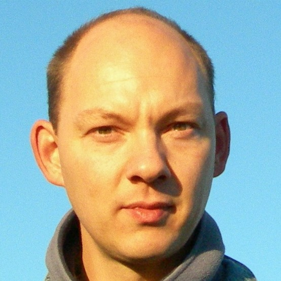
Spatial Information specialist
DevOps Engineer